Feather
In this section my own implementation of ECS architecture called Feather will be explained.
First the overall Architecture will be shown and then speed tests as well as actual code
snippets
will be displayed,
showcasing how it is like developing using Feather.
The full open sourced codebase for Feather as well as it's documentation can be found here.
Architecture
In Feather Entities are just an unsigned integers which are used to get the index in a set of components. Components in Feather are just structs of data. Systems is where the functionality is implemented, the user can create their own systems and can iterate through the entities in the world. There are multiple ways of iteration which are shown later in this report.
Except the main concepts like Entities,Components and Systems there are a few more "Classes" that the user needs to understand in order to use Feather:
- EntityRegistry: Keeps track of all the entities in the world. It creates and destroys entities.
- ComponentRegistry: Keeps track of all Component Sparse Sets. If the user needs access to a Component set of a certain type this registry is responsible for providing it.
- SystemRegistry: Keeps track of all systems, allocates system memory and provides access to the users for all the registered systems.
- ComponentSparseSet: Is a custom collection type created for the purpose of storing component data contiguous in memory. It allows the users to create,get and destroy components.A more in depth explanation of this class will be shown in the Memory Layout Section.
- World: Is the core class of Feather. It serves as a factory to all registries, that
means
that the user only needs to work with the world class and the world class with update the
registries accordingly. For example, if the user destroys an entity via the world class, the
world class will inform all the registries that the entity is destroyed and they will
internally
be updated correctly.
Examples on how to use the world class and Feather will be shown in the the Workflow section. - EntityHandle: This small class provides a workflow similar to unity for entities. It
wraps the active world and an entity and instead of updating an entity with the world you
update
the EntityHandle and it will internally update the world.
Similar to the world class, more examples of how EntityHandle works will be shown in the Workflow section.
Memory Layout
As mentioned before a key advantage of ECS is providing good memory layout.
All memory that feather uses is allocated in the beginning of the application.There is no
runtime
heap allocations done by Feather. The memory is partitioned correctly and marked as valid or
invalid based on users input. When a component is marked for destruction, the component is moved
and
it wont be updated, however it wont be deleted from memory until the user explicitly needs the
data
to be deleted
(Usually done in the end of the application's lifetime).
Components in feather are stored in a custom collection called ComponentSparseSet.
In Feather a ComponentSparseSet is just 3 C style arrays:
- Component Dense array: In this array all the components are stored contiguously(one after another).
- Entity Dense array: In this array all the entities which contain the component are stored contiguously(one after another)
- Index Sparse array: The index array is sparse meaning its data is not contiguous. Instead the indexes of which the entity
The reason why 3 arrays are needed is to answer the problem What happens if a component is marked to be removed? The pictures below is needed to show why this is a problem. The picture represents a simplified visualisation of how the components are stored in memory. As said before the ComponentSparseSet contains 3 arrays and those arrays are displayed in a table format. Now the max size is set to 5 elements and it is empty. 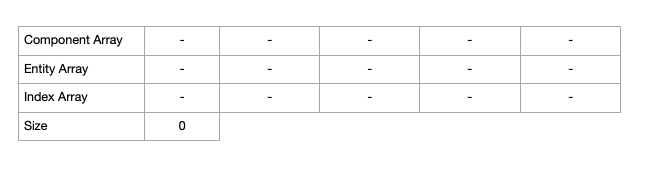
So what happens when "C1" is added to Entity "0"(as stated before entities
are
just unsigned numbers) to our set?
It is immediately added in the first available slot in the array, in this case it is slot 0.
In the entity array Entity "0" is added to the first available slot too.
Last in the index array, the index at which the entity's component is stored is added
and we store it at the 0 index since our Entity = 0.
Now we have mapped Entity->Index and Index->Entity.This is important when we destroy a component.
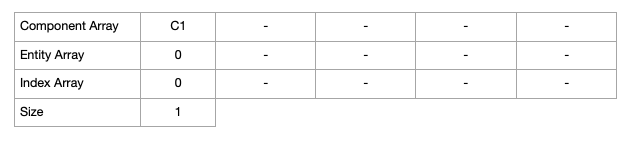
Components "C2,C3,C4" are added to the Entity "1,2,3" respectively. And the arrays are updated
as shown before.
Now what happens if we remove a component from this set?
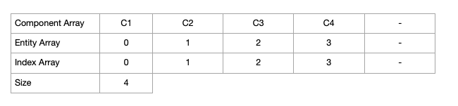
What happens if "C3" is needed to be removed from the set? First "C3" and "C4" are swapped in the
dense
component array then
the Entity->Index and Index->Entity need to be swapped as well, since next time we need to get "C4" the
Entity needs to point to the updated index.
In the Entity dense array the same thing needs to be done, so the entity to remove is swapped with the last entity.
In the index sparse array the entity index needs to be updated.
As it is shown the index sparse array has holes in it but that is not a problem since it is never iterated
, it is only needed when a component is removed and the set needs to remain packed.
If the user needs to get "C4", first it's location will be found by using it's Entity value(in this case 3)
to find the right index.
Then in the index array, the 3rd element is retrieved which is 2 meaning that the "C4" is
located in the 2nd index of the dense array.
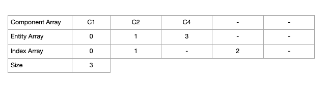
Finally "C1" is removed from the set.
Again "C1" and "C4" are swapped with each other and "C4"'s index is updated to point in the location where "C1" used
to
be.
And now the array will always remain packed, and it can be iterated safely.
The swapping cost
is not that high since its just two C-style array look-ups and the lookup is done only when a component
needs to be removed which is not that frequent.
However the benefits are big since the data that is active and needed is always contiguous in
memory.
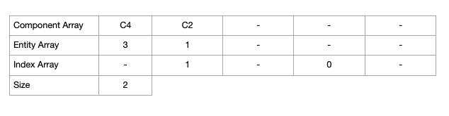
Speed Test
Feather Vs OOP
First Feather Vs Object-Oriented approach was tested. Two programs were created which involved
two different
types of entities, Orcs and Nobles.
In the OOP they are classes inheriting from other base classes. While in
ECS/Feather
they are just two simple components. The behaviour itself is very trivial,
in this case the iteration speed is the focus of the test.
Three different cases were tested, one with 1000 "Orcs" and "Nobles", one with 10,000 and one
with
100,000. The program is executed for 1000 frames and in order to get a consistent result the
app
is executed 100 times.
The results are displayed graphically in the right. The X-axis shows the number of time
the
program was executed and
the Y-axis shows the time in milliseconds it took for 1000 frames.
In all three cases Feather Performs much better then OOP when we iterate
through components/behaviours.
There are two main reasons why OOP performs worst than Feather.
First one is the data in Feather is contiguous in memory,
thus the CPU cache saves cycles by storing the data we might need the next frame.
The second reason is concept known in OOP as Double Dispatching which in this
case is
a call to the virtual "Update" function. Double-Dispatching
requires a V-table lookup and that is also located somewhere scattered in memory thus
waisting CPU cycles.
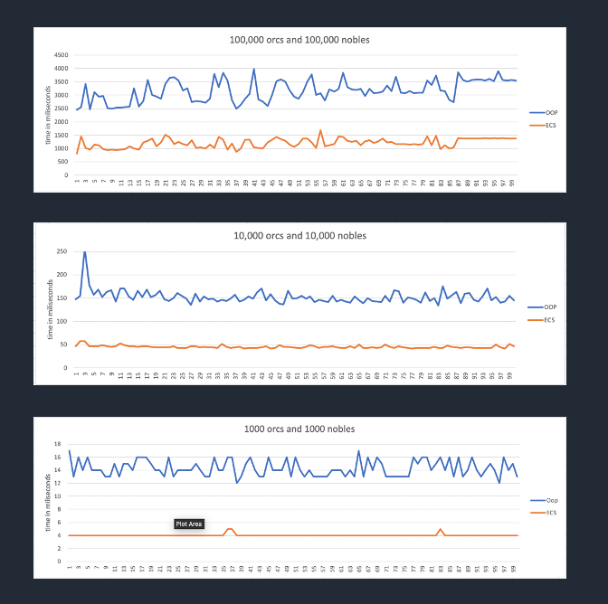
Feather Vs Component System (Unity)
The second test performed was against Unity and it's current component system. For
this
test the
steering and flocking behaviour systems build in Unity are the same one as the ones used in final game in C++.
The unity program only
spawns a bunch of spheres and gives them a target to seek while they try to keep
distance
from each other using basic
O(n2) flocking.
As shown in the video on the right, after 300-400 spheres the frames drop under
30
FPS and at 500 spheres the framerate is very low. The current spheres have
no collider attached to them and the most expensive calculation is done by the Flocking
Behaviour component.
In the second video the same systems are tested in Feather and in an custom C++ Game Engine (Crow). The performance difference is noticeable, now there are way more units, 3-4 times more then Unity while keeping a steady high framerate. After 1200 the FPS drops exponentially since the flocking is done O(n2). The Feather performs better while also having other gameplay systems running in addition to flocking system.
There are many things that could be done to even get more units on the screen. For example the flocking and collision instead of being performed in O(n2) they could be performed in logarithmic complexity by introducing spacial partitioning algorithms. There are also rendering optimisation that could be implemented such as batching for all the meshes. However the goal was to test the same systems running in an equal environment.
Workflow
In this section, some examples of how to set up and use Feather will be shown.How
to
create Entities,Components,Systems
and how to iterate through the components and create functionality will be displayed.
First Feather needs to be set up. In order for Feather to function we need to create
the
3 main registries, the Entity,Component and system registry.
After they are created, a world needs to be created which will act as an context and it will
communicate with all the registries. The world needs to be initialized by calling the "Init" function and passing the registries,
this
way the world is ready to be used and knows which memory it has to operate on.
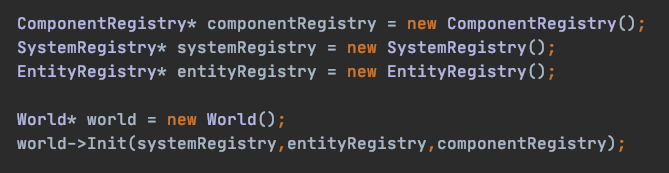
Since components are just data, they are very simple to create. The only thing needed to create a
component is a struct with our values inside, that's it.
As displayed below, a position component which holds an "X","Y" values and a gravity component
which
defines a "gravityValue" are created.

Systems are not that complicated to create either. As stated before systems define the behaviour of
our
program. The first picture below
display how to set a the signature of a system. This is only required if systems need to
know
about which entities to iterate on
beforehand and let the World automatically update the entities set for the user.The line below is
telling Feather that the GravitySystem
needs to iterate on entities which have both a Position and a Gravity
component.
This is one of the ways to iterate components in ECS
architecture. In the later sections, more ways to iterate components and what are the benefits of
each
way will be shown.
The second picture below is an example of
how a gravity system would look like. First custom system needs to inherit base System class,
this way we let feather know that this class
is a system and it gives a bunch of functions to override such as Init,Update,Render etc. In the
"Update" function
all the entities which fit this system's signature are iterated and their Position and
Gravity
components are retrieved. Then the Position component is updated based on "gravityValue" of the Gravity
component.
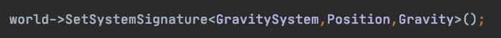
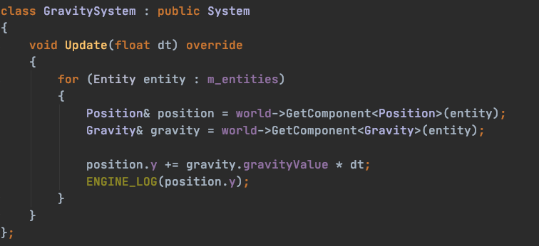
Another way of iterating components is to use the EntitiesWith function of the World
class. EntitiesWith
is a Query function which returns a list of Entities which contain a given case of components in
this
case a Position and Gravity
component. Internally this function takes the smallest set of the given component and checks which
of
it's entities is located in any of the other
component sets and return those to the user.
After list of entities is retrieved, the entities can be iterated and updated just as in the example above.
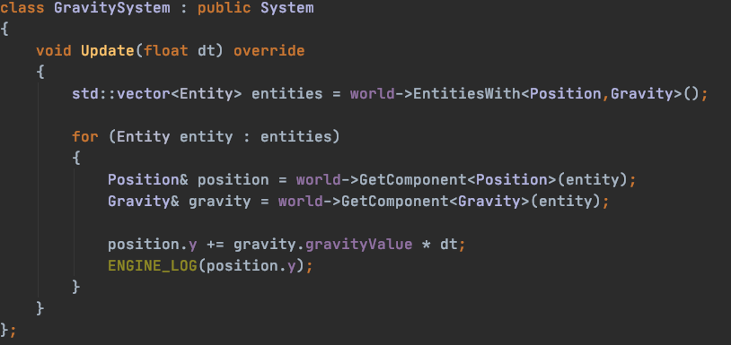
An even easier way to iterate component is using the ForEach function. It takes a function as
a
parameter and provide the references
to the entity and components automatically. This is similar to how Unity iterates components in
their
DOTS api.
Now the components don't have to be retrieved from the entity since they are automatically filled in by the
world and instead the user can focus on writing their behaviour
inside the lambda function.
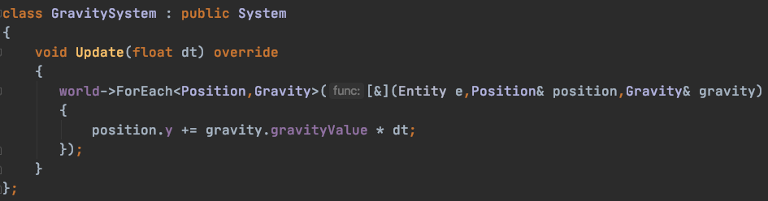
The last way to query entities and components in Feather is using the FindEntities function.
It
will return all the entities that fit
a conditional function given as parameter. In the example below all the entities
which have a Position component and have
their position's "X","Y" values equal to 0 are retrieved.
Then these entities can be iterated and updated accordingly, in the example below we just destroy
them.
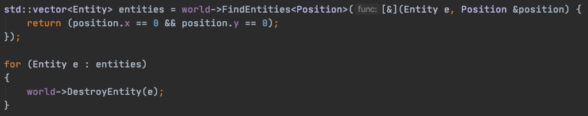
In order for systems and components to work, the user has to allocate memory for them.
This way all the memory is allocated upfront
so there is no heap allocation at runtime.
If for example a new world needs to be loaded,the same memory can be used,instead of deleting memory and
allocating it again.
Another good thing about this approach is that it minimises null errors in runtime since all of the
memory is valid and partitioned correctly.
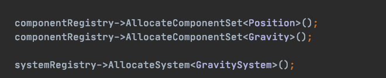
Lastly the only thing left to do in order for the application to work is create the entities and
attach
components to them.An EntityHandle
can be created by the world and then any type of component can be attached to it. This components have
to
be allocated before being added otherwise an
error will be thrown.
The last line just updates all the systems registered to the world. And that is everything needed to
set
up and work with Feather.
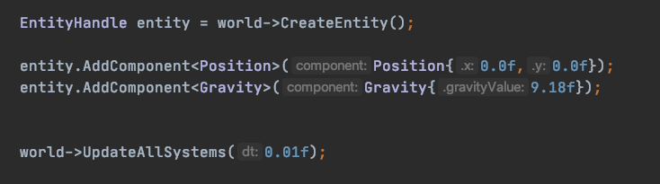